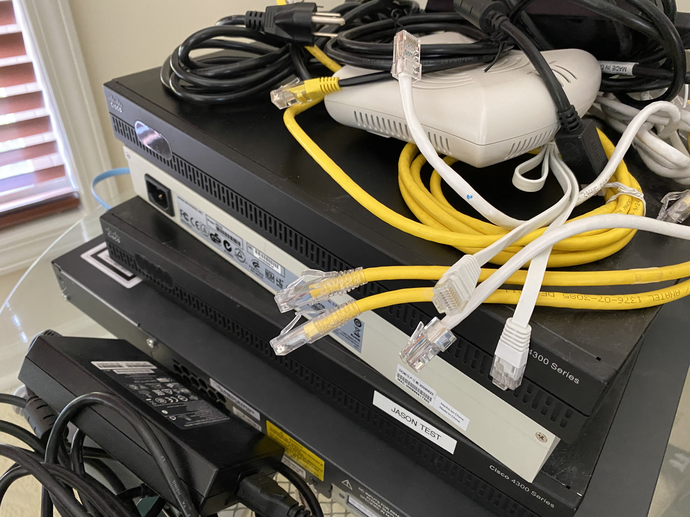

Vincent Tran's Major
Facts about Information Technology
- 1989: Tim Berners-Lee created the World Wide Web!
- April 30, 1993: CERN put Tim Berners-Lee's creation, the World Wide Web, in the public domain!
- October 13, 1994: Netscape releases their first product ever, the Mosaic Netscape 0.9.
Sources: Netscape Wikipedia, CERN Website
Some Equipment I Use

Click here to go back: back